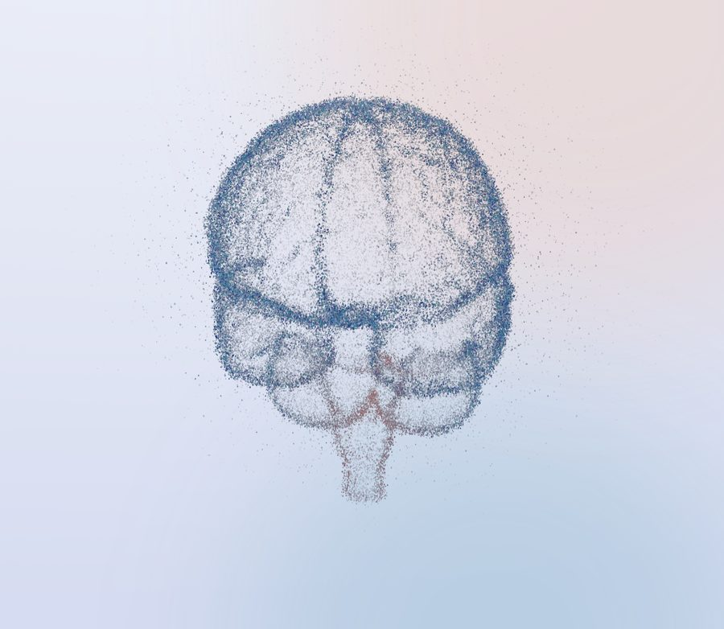

Now enrolling
Neurology research · Pasadena
Myasthenia gravis research
Nerve-to-muscle signals; the brain itself stays healthy. Here are the parts of the brain involved and how Myasthenia gravis affects them.

Regions involved
1
Motor cortexSends signals for voluntary movement
Movement signals start here and travel normally. In gMG the problem is further along the path, where nerve meets muscle.
2
BrainstemBreathing, heart rate, swallowing
Nerves for the eyes, face and swallowing start here. Antibodies block their signal at the muscle, causing droopy eyelids, double vision or trouble swallowing.
A short online prescreen is the first step. A study coordinator reviews your answers and calls you.
Take the prescreen →General information only, not medical advice. Study details, including risks, are explained in each study's IRB-approved consent form.